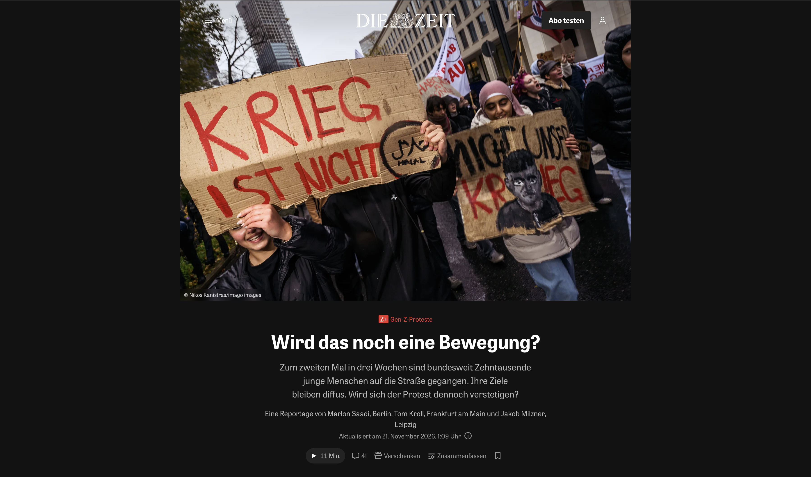
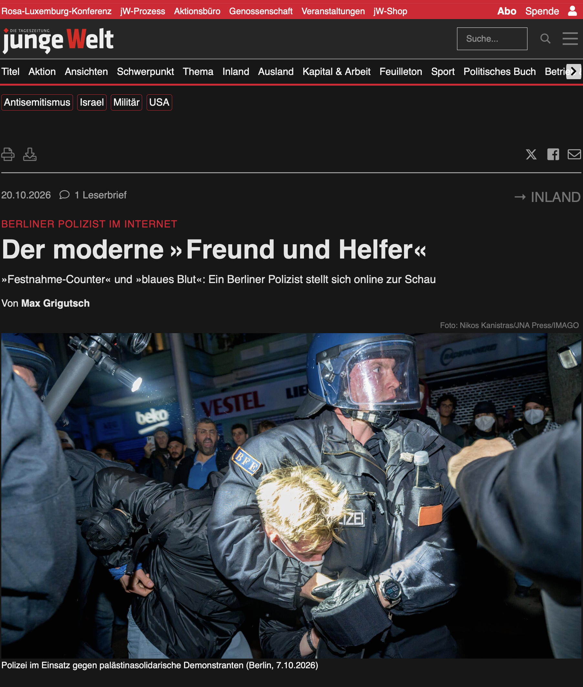
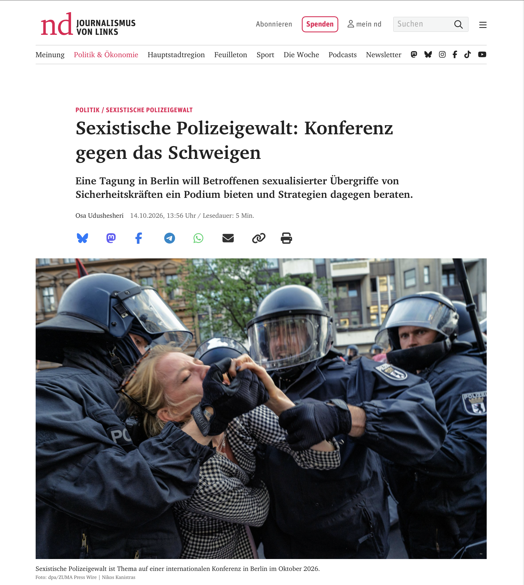
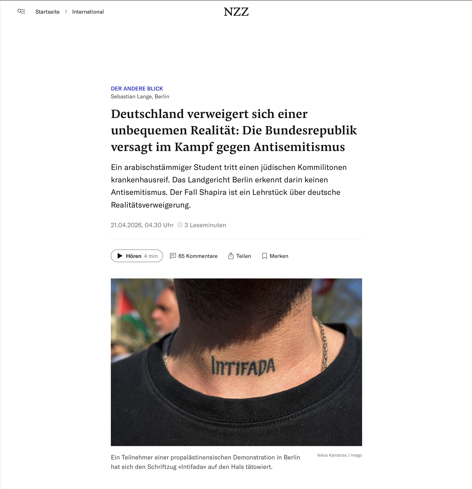
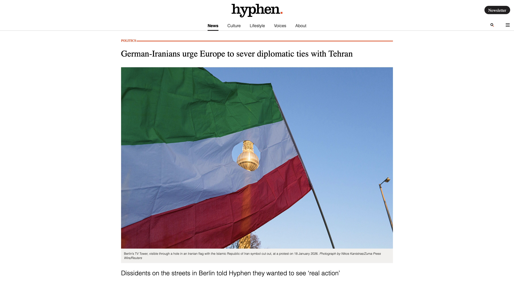
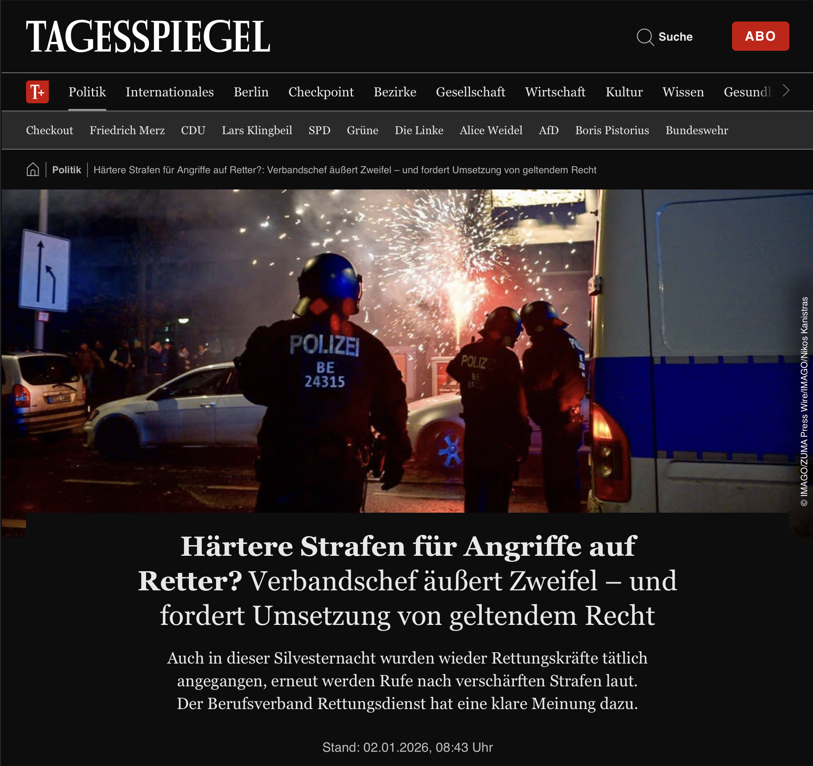
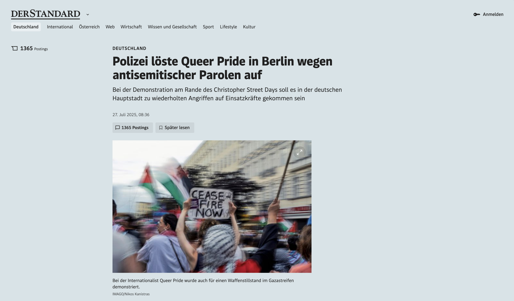
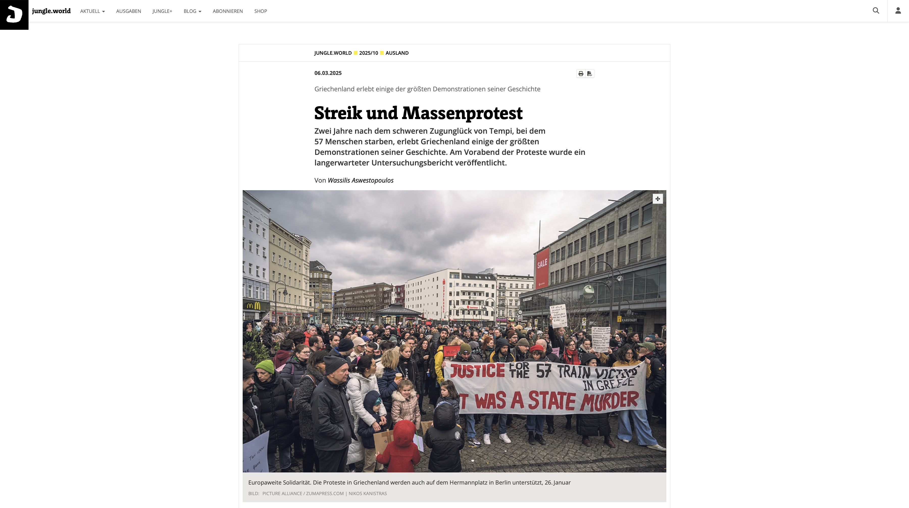

Tearsheets

Die Zeit, Germany, 2026
Junge Welt, Germany, 2026
nd Aktuell, Germany, 2026 Tagesspiegel, Germany, 2026 Süddeutsche Zeitung, Germany, 2026
Neue Zürcher Zeitung, Switzerland, 2026
Hyphen, United Kingdom, 2026 Deutsche Welle, Germany, 2026
Tagesspiegel, Germany, 2026 Altreconomia, Italy, 2025
Der Standard, Austria, 2025
Jungle World, Germany, 2025